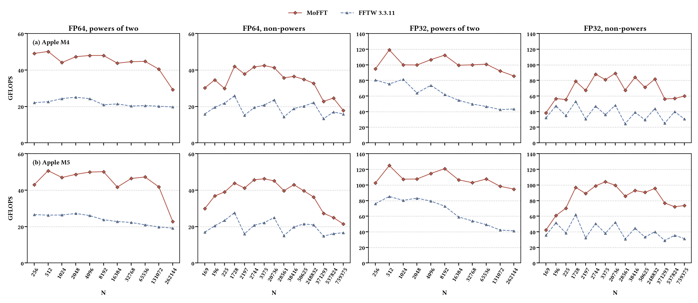

Open-source scientific software
The FFT.
A matrix
perspective.
Fast Fourier transforms, organized around the matrix engine. A library and kernel compiler for Arm SME/SME2.
C library · Python kernel compiler · Apache 2.0
An FFT library.
And the compiler
behind it.
MoFFT connects mathematical structure with the instructions that execute it.
The library combines generated radix kernels into complete complex FFT plans. The compiler explores equivalent butterfly expressions, represents their dependencies, and maps the selected computation to Arm’s scalable matrix extension.
Target profiles guide the choices. Generated kernels become part of the library at build time, while kernel and plan wisdom provide a path from measurement to execution.
Explore the compilation pipelineOne-dimensional C2C transforms on Apple arm64 with SME support. Supported lengths have prime factors in 2, 3, 5, 7, 11, 13.
02 / GET STARTED
From source
to transform.
Build the library, generate the kernels, and run the correctness tests.
Apple arm64 with SME support
SME-capable Clang · CMake · Python
From a target profile
to a complete FFT.
A connected workflow for exploring expressions, generating kernels, and selecting plans.
Make the target part of the model.
Instruction and memory measurements inform a machine profile. The compiler uses that profile to estimate the cost of candidate computations.
View target profilesThe details
are in the source.
Start with the build guide, explore the API, or reproduce the evaluation workflow.
Browse the repository
06 / RESEARCH
Research,
openly implemented.
Explore the outer-product formulation of the FFT and the matrix-oriented compiler in these published papers.
MoFFT: Matrix-Oriented FFT Optimization Leveraging Outer-Product Operations on ARM SME CPUs
IEEE Transactions on Parallel and Distributed Systems · Vol. 37, No. 12, pp. 2659–2675 · December 2026
OpenFFT-SME: An Efficient Outer Product Pattern FFT Library on ARM SME CPUs
IEEE International Parallel and Distributed Processing Symposium (IPDPS) · 2024
A few useful
starting points.
Which platforms does MoFFT currently target?
The current implementation targets Apple arm64 systems with Arm SME/SME2 support. Check the repository’s toolchain and target requirements before building. A platform without SME2 requires a suitable backend and validation; removing a compiler flag is not a complete port.
Does it support real or multidimensional FFTs?
The current public library provides one-dimensional complex-to-complex transforms. Real transforms, multidimensional interfaces, and convolution pipelines are separate extensions rather than existing API capabilities.
For guidance on those extensions, explore the MoFFT porting skill ↗.
How do I evaluate performance on my machine?
Follow the repository’s calibration and benchmark workflow. Generate a target profile, validate kernels, search plans, and measure execution with matched inputs and timing boundaries. Keep planning and allocation separate from execution, and use an exclusive, thermally stable measurement window for formal results.
Where should I report an issue or ask a question?
Use GitHub Issues ↗ for questions and reproducible reports. Include the relevant public code revision, compiler, target capabilities, and steps to reproduce. Review diagnostics for personal information before sharing.
Take a closer look.
Read the code. Build the library. Explore the computation.